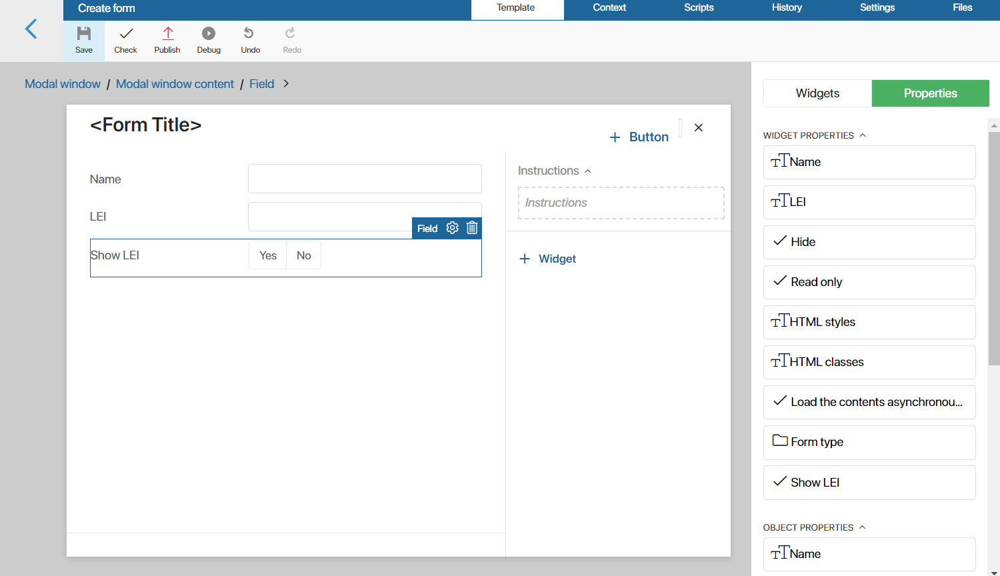

Validation is used to verify that fields are filled out correctly and to determine if the form can be saved. Validation can be:
- System. It checks the filling of mandatory fields on the form. With system validation, only standard errors are displayed on the form.
- Custom. The parameters of field validation and error output are set by the user.
To set custom validation, the Validation function is used. It is created on the Settings tab of the interface designer. In this function, additional validation checks are added to the existing standard checks. Read more about methods and properties of the validation result object in BRIX TS SDK in the Validation result article.
If at least one error of standard or custom validation is present, the form cannot be saved. Exceptions are errors of hidden form fields.
Set up custom validation
Let’s consider the work of the validation function on the example of checking the LEI field when creating an element of the Entity app.
Let’s say, on the Entity app form, there is the LEI property of the String type. To create a new entity, this field must be filled in correctly, i.e. a certain number of digits must be entered.
Perform the following steps to set custom validation:
- Open the app item creation form in the interface designer.
- Go to the Settings tab.
- In the System functions section, in the Validation field, specify the validation function. To do this, click Create, then Open.

- The opened Scripts tab will display a blank asynchronous function that returns the validation result (
Promise). - Inside the function, create a new validation result object and place it in a variable, for example,
result. You can add necessary validation errors to this object. The object should also be returned as a result of the function execution:
async function validate(): Promise<ValidationResult> {
const result = new ValidationResult();
...
return result;
}
After creating the function and adding a variable with the result to it, you need to generate validation errors that will be displayed on the form when fields are filled out incorrectly.
Add validation errors
You can add various actions to the validation function, for example, additional checks, as well as create errors that will be displayed on the form.
For example, the function will check not only the LEI property, but also its content: the number of entered characters and their type.
For convenience, when creating validation checks, we will create a variable lei, to which the value of the property storing the entered LEI (Context.data.lei) will be passed from the context:
async function validate(): Promise<ValidationResult> {
const result = new ValidationResult();
const lei = Context.data.lei;
…
return result;
}
When checking the contents of the property, we will add the validation result to the variable. In this case, we will use the field code from the context (in our case, lei) as the first parameter for the result, and the displayed validation error text as the second parameter. For example:
async function validate(): Promise<ValidationResult> {
const result = new ValidationResult();
const lei = Context.data.lei;
if (!lei?.length) {
result.addContextError('lei', "Company LEI number must be entered");
return result;
}
if (lei && /[^0-9]/.test(lei)) {
result.addContextError('lei', "LEI number can only consist of digits");
return result;
}
if (lei && [20].indexOf(lei.length) === -1) {
result.addContextError('lei', "LEI number can only have 20 digits");
return result;
}
return result;
}
The following methods can be used to add validation errors:
addContextError(). If the property to be validated is in the context of the main object (app property, task, etc.), i. e., inContext.data.addViewContextError(). If the property is in the context of the form itself, i. e., inViewContext.data.
These rules should be taken into account when writing functions, otherwise errors on the form may be displayed incorrectly.
After checking the fields and adding errors for certain conditions, save and publish the form. If you try to create a Entity app items without filling in the required fields, you will see errors:

Validation errors are displayed below the fields and are also listed in the validation section at the top of the form. In addition to the added custom validation errors, the list also shows standard validation errors, in our case, the unfilled required field Name.
If the method of adding the error is selected correctly, the property names will be displayed in the list. If you click on the property name from the list, you will be passed to this field on the form.
Also, in the upper right corner of the validation activity, the icon is displayed that allows you to close the activity. If you try to save the form and there is at least one error, the activity will be displayed again.
You can add multiple validation errors for each field at the same time. For instance, you can modify the validation function so that each time a property is checked, it does not return a result, but checks the next condition. For example:
async function validate(): Promise<ValidationResult> {
const result = new ValidationResult();
const lei = Context.data. lei ;
if (!lei ?.length) {
result.addContextError(lei , "Company LEI number must be entered");
}
if (lei && /[^0-9]/.test(lei )) {
result.addContextError(lei , "LEI number can only consist of digits");
}
if (lei && [20].indexOf(lei .length) === -1) {
result.addContextError(lei , "LEI number can only have 20 digits");
}
return result;
}
In this case, all current validation errors for this property will be displayed in the validation field of the form and under the field itself:

Change the validation widget header
Above the list of errors in the validation field, there is the title. Its value is set by default. To change it, use the title property:
result.title = "Error detected when adding the entity:";

Add text to validation errors
In the field with the list of validation errors, you can display text messages with additional information. For example, add a message about some error using the addMessage() method:
result.addMessage('There is an error not linked with any form field');
Messages added in this way will be displayed under the validation title:

Validation of hidden fields
An app form may contain a hidden but required field. In this case, validation will depend on how the field is hidden:
- Validation is ignored if the field is not visible on the form based on a condition. For example, the visibility of a field depends on the value of other properties, it is controlled by a function or added to a widget hidden on condition. In this case, the hidden field will not be validated and the user will not see any errors when saving the item.
- Validation will work if the field is always hidden or is added to a widget that is always hidden. For example, the value for a field is set automatically by a script. In this case, the hidden field will be validated for filling errors, and the user will see them when saving the item.
Let’s take a closer look at both options.
Validation of fields hidden on condition
Let’s say there is a required LEI field on the entity creation form. To allow users to add a new item without entering the company’s LEI, let’s customize the field display using a switch:
- Open the app item creation form in the interface designer.
- Remove the default located Standard item form widget, which contains all properties from the app context.
- Add the properties deleted with the widget to the form again. To do this, select the Properties tab in the right panel of the interface designer and drag and drop the required fields onto the form. All properties will be displayed as a Form field widget.
- Click on the Context tab and create the Show LEI (
show_lei) property of the Yes/No switch type. - Place the created Show LEI property on the modeling canvas.

- Open the settings for the LEI property. On the System tab, in the Hide field, select the Show on condition option. Then link the condition with the variable Show LEI. The display of the LEI field will depend on the value of this variable.

- Save and publish the form.
After that, try to create an Entity app item. Set the Show LEI switch to No to hide the required field and click Save.
The required Name field is validated. When this field is filled in, the item will be saved and validation errors of the hidden LEI field will be ignored.
If the switch is set to Yes, the LEI field will be displayed on the form and its value will be checked.
Validation of always hidden fields
Suppose you need to place a hidden field on the company creation form, and its value is set using a script. For correct operation of the app, the value of this field must be checked by validation rules. To do this:
- Open the app item creation form in the interface designer.
- Click the Context tab and create a new property. Specify a name, for example, Special field (
special). - Place the created property on the modeling canvas. To do this, select the Properties tab in the right pane of the interface designer and drag the field onto the form. The property will be displayed as the Form field widget.
- In the opened property settings window, on the System tab, in the Hide field, select the Always hide option.
- Save and publish changes.
After that, try to create an Entity app item. If the hidden field was filled out incorrectly, the user will see a validation error.

Found a typo? Select it and press Ctrl+Enter to send us feedback